U.S. Route 395 Travel Guide
557-mile route that serves as a connection to the Los Angeles area for the communities of the Owens Valley, Mammoth Lakes and Mono Lake
Places to See on U.S. Route 395
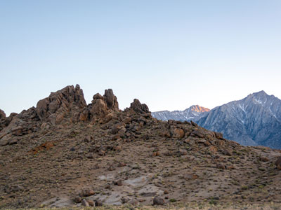
RuggyBearLA, CC BY 2.0, via Wikimedia Commons; Image Size Adjusted

Alabama Hills National Scenic Area
Range of hills and rock formations near the eastern slope of the Sierra Nevada in the Owens Valley, west of Lone Pine

Ancient Bristlecone Pine Forest
Home to the oldest trees in the world, bristlecone pines, some exceeding 4000 years of age and exhibit spectacular growth forms of twisted and beautifully colored wood and includes several self guided trails
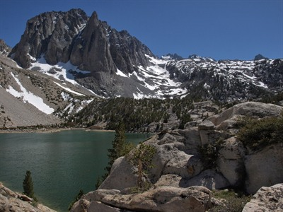
Jim Morefield, CC BY-SA 2.0, via Wikimedia Commons; Image Size Adjusted
.jpg){kind=link}
Jeff P from Berkeley, CA, USA, CC BY 2.0, via Wikimedia Commons; Image Size Adjusted
.jpg){kind=link}
Big Pine Lakes / Palisades Glacier
Located between Sierra Nevada and White Mountains, area leads high up Big Pine Creek into the Sierra, to lakes, hiking trails, fishing, and rock climbing underneath the Palisades Range and the Palisade Glacier
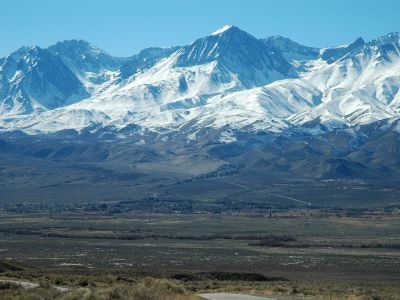
Clinton Steeds, CC BY 2.0, via Wikimedia Commons; Image Size Adjusted

Big Pine
Small high desert town surrounded by dramatic mountain ranges, glacial valleys, and ancient forests offering access to outdoor recreation and scientific landmarks.
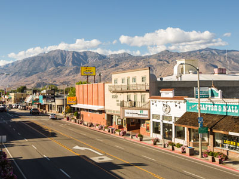
Bishopvisitor, CC BY-SA 4.0, via Wikimedia Commons; Image Size Adjusted

Bishop
Largest populated city in Inyo County, with many vacation destinations and tourist attractions in the Sierra Nevada located nearby
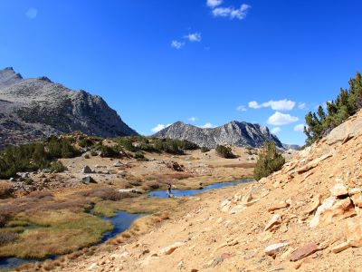
daveynin, CC BY 2.0, via Wikimedia Commons; Image Size Adjusted

Bishop Creek
Mountain canyon system featuring glacial lakes, waterfalls, and forested trails ideal for fishing, hiking, and seasonal recreation.
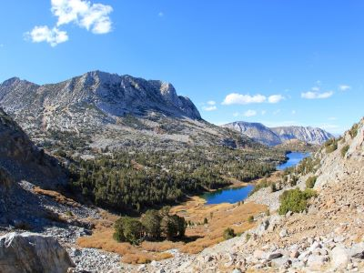
daveynin, CC BY 2.0, via Wikimedia Commons; Image Size Adjusted

Bishop Pass Trail
Alpine hiking route traversing granite basins, glacial lakes, and high mountain passes with panoramic views of the Eastern Sierra.

Bodie State Historic Park
Ghost town in the Bodie Hills east of the Sierra Nevada mountain range with about 110 structures still standing, including one of many once operational gold mills.
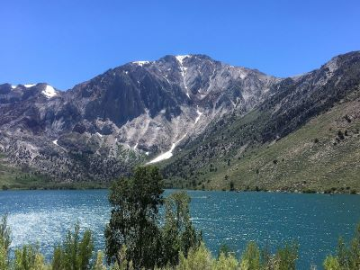
Gwillhickers, CC BY-SA 4.0, via Wikimedia Commons; Image Size Adjusted

Convict Lake
Glacially carved alpine lake surrounded by steep granite cliffs, offering fishing, hiking, and boating in a scenic Eastern Sierra setting.
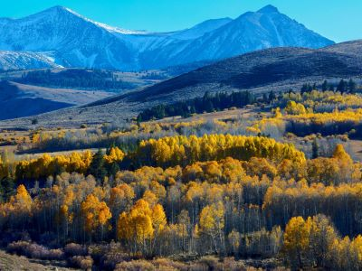
Bureau of Land Management California, Public domain, via Wikimedia Commons; Image Size Adjusted
.jpg){kind=link}
Conway Summit
Scenic overlook featuring dramatic alpine terrain, vibrant fall foliage, and panoramic views of nearby lakes and mountain ranges.
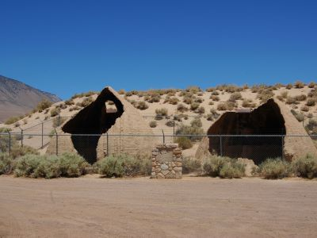
Epolk, CC BY-SA 3.0, via Wikimedia Commons; Image Size Adjusted

Cottonwood Creek Charcoal Kilns
Restored 19th-century clay kilns once used for charcoal production, now preserved as a historical site with interpretive signage and walking trails.
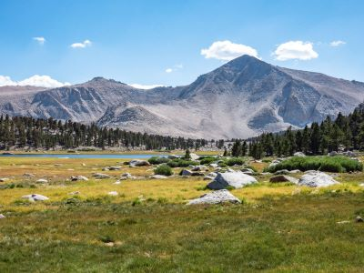
Marty B, CC BY-SA 2.0, via Wikimedia Commons; Image Size Adjusted

Cottonwood Lakes Trail
High-altitude wilderness trail leading to a series of alpine lakes beneath Mount Langley, popular for backpacking, fishing, and scenic solitude.

Crowley Lake Stone Columns
Remote lakeside rock formations created by volcanic activity and erosion, accessible by rugged trail or 4WD vehicle.
Devils Postpile National Monument
Encompasses two main attractions: the Devils Postpile formation, an unusual rock formation of columnar basalt, and Rainbow Falls, a waterfall on the Middle Fork of the San Joaquin River
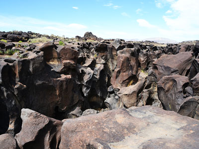
Eeekster, CC BY-SA 4.0, via Wikimedia Commons; Image Size Adjusted

Fossil Falls
Unique geological feature where volcanic activity in the mountain range, along with meltwater from glaciers in the nearby Sierra Nevada, played a role in the creation of the falls.
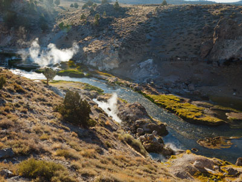
TheDailyNathan (talk · contribs), CC BY-SA 3.0, via Wikimedia Commons; Image Size Adjusted

Hot Creek Geologic Site
Geologic interpretive site and recreation area popular for fishing, swimming, hiking, bird watching, and photography activities.
Independence
Historic small town in the Owens Valley known for its museums, Native American heritage, and access to Sierra Nevada trailheads and scenic drives.
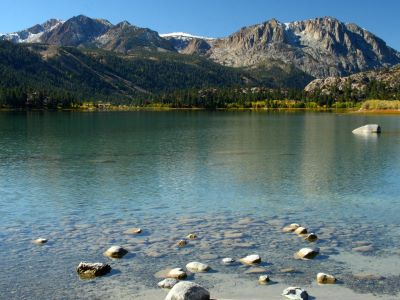
Frank K, CC BY 2.0, via Wikimedia Commons; Image Size Adjusted

June Lake
Alpine lake and resort village offering year-round recreation including fishing, skiing, hiking, and scenic drives along the June Lake Loop.
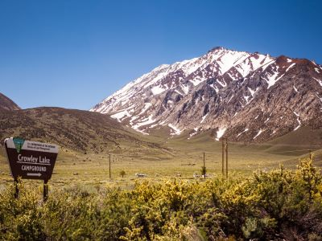
blmcalifornia, Public domain, via Wikimedia Commons; Image Size Adjusted
.jpg){kind=link}
Lake Crowley
Large reservoir surrounded by volcanic cliffs and sagebrush hills, popular for trout fishing, boating, and seasonal birdwatching.
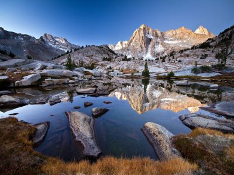
Jeff P, CC BY 2.0, via Wikimedia Commons; Image Size Adjusted

Lake Sabrina
High-elevation alpine lake offering fishing, boating, hiking, and seasonal café access surrounded by dramatic Sierra Nevada scenery.
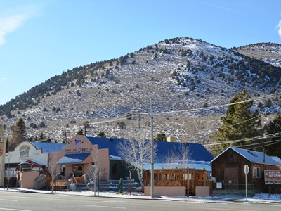
Nandaro, CC BY-SA 3.0, via Wikimedia Commons; Image Size Adjusted

Lee Vining
Small Eastern Sierra town offering access to Mono Lake, Yosemite National Park, and a variety of outdoor recreation, visitor services, and scenic byways.

Thomson200, CC0, via Wikimedia Commons; Image Size Adjusted

Lone Pine, CA
Community at an elevation of 3,727 feet, located in the Owens Valley, between the eastern peaks of the Sierra Nevada to the west and the Inyo Mountains to the east
-400.jpg)
Murray Foubister, CC BY-SA 2.0, via Wikimedia Commons; Image Size Adjusted
.jpg){kind=link}
Mammoth Lakes
Town located immediately to the east of Mammoth Mountain, at an elevation of 7,880 feet, is known for its ski area, lakes, soda springs, and obsidian dome.
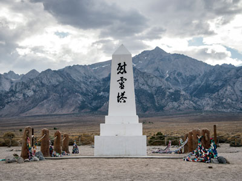
Gillfoto, CC BY-SA 4.0, via Wikimedia Commons; Image Size Adjusted

Manzanar National Historic Site
Preserved site featuring reconstructed barracks, exhibits, and memorials that interpret the forced relocation and incarceration of Japanese Americans during World War II.
Mono Lake
Saline soda lake in Mono County, known for the lack of an outlet that causes high levels of salts to accumulate in the lake and make many columns of limestone rise above the surface
Daniel Schwen, CC BY-SA 4.0, via Wikimedia Commons; Image Size Adjusted

Moonlight Falls
Remote alpine waterfall cascading through granite cliffs in a high-elevation basin surrounded by lakes and wildflower meadows.
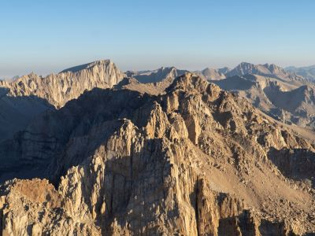
Kylie Stewart, CC BY 2.0, via Wikimedia Commons; Image Size Adjusted

Mount Langley
High-elevation peak in the Sierra Nevada offering a strenuous alpine hike through meadows, lakes, and granite ridges to a summit over 14,000 feet.
Daniel Schwen, CC BY-SA 4.0, via Wikimedia Commons; Image Size Adjusted
Olancha Sculpture Garden
Outdoor desert installation of large-scale metal sculptures exploring themes of identity, transformation, and social commentary.
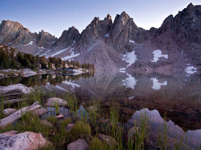
Jeffrey Pang, CC BY 2.0, via Wikimedia Commons; Image Size Adjusted
.jpg){kind=link}
Onion Valley / Kearsarge Pass
One of the principal entry routes to the John Muir Wilderness which protect the Sierra Nevada west of the divide between the Owens Valley on the east and the rivers which drain into the San Joaquin Valley to the west
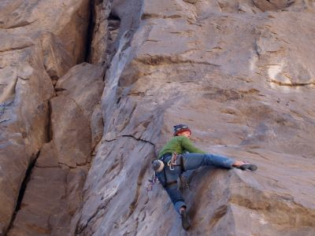
Jonathan Fox, CC BY-SA 2.0, via Wikimedia Commons; Image Size Adjusted

Owens River Gorge
Steep volcanic canyon carved by the Owens River, offering world-class rock climbing, fly fishing, and scenic hiking trails.
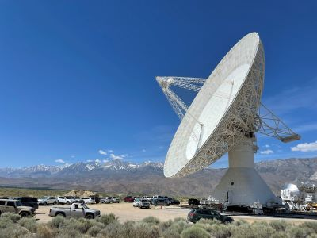
Blervis, CC BY 4.0, via Wikimedia Commons; Image Size Adjusted

Owens Valley Radio Observatory
Scientific research facility featuring large radio telescopes used to study cosmic phenomena such as blazars, solar activity, and fast radio bursts.
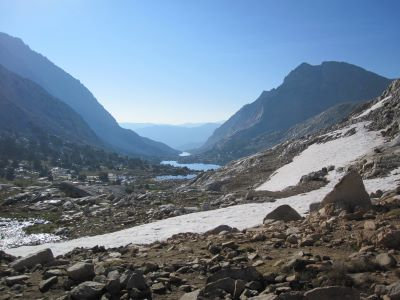
Brett L, CC BY-SA 2.0, via Wikimedia Commons; Image Size Adjusted

Piute Pass
Scenic high-alpine trail ascending through forests, lakes, and granite basins to a mountain pass overlooking Humphreys Basin.
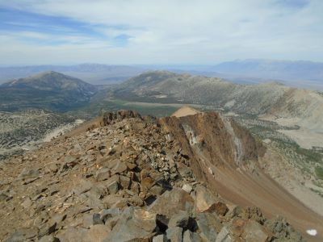
Martin Stiburek, CC BY-SA 4.0, via Wikimedia Commons; Image Size Adjusted

Rock Creek Lake Trail
High-elevation trail system offering access to alpine lakes, wildflower meadows, and panoramic views of the John Muir Wilderness.
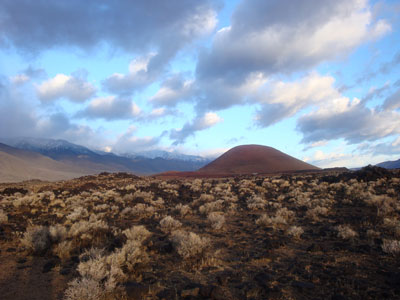
Powerhouse55, CC BY 3.0, via Wikimedia Commons; Image Size Adjusted

Saltlake Cinder Cone
Cone-shaped geological formation composed of volcanic scoria and ash, rising from a desert landscape marked by ancient lava flows and mining activity.
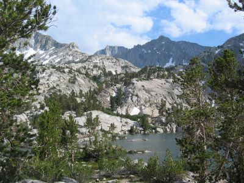
Dcrjsr, CC BY-SA 3.0, via Wikimedia Commons; Image Size Adjusted

South Lake
Alpine lake surrounded by pine forests and granite peaks, offering recreational access to hiking trails, fishing spots, and scenic vistas in a high-elevation basin.
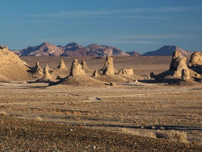
blmcalifornia, Public domain, via Wikimedia Commons; Image Size Adjusted
.jpg){kind=link}
Trona Pinnacles
Expansive desert landscape filled with over 500 ancient tufa spires rising from a dry lakebed, offering dramatic views and geological intrigue.
Daniel Schwen, CC BY-SA 4.0, via Wikimedia Commons; Image Size Adjusted
Whitmore Hot Springs
Natural geothermal pool in the Eastern Sierra offering scenic soaking with mountain views in a rustic, undeveloped setting.
How to Get There
From Las Vegas (200 mi): Take I-15 S to Barstow, then merge onto US-395 N toward Ridgecrest and continue north into the Owens Valley along the eastern Sierra.
From Los Angeles (165 mi): Take CA-14 N through Mojave, continue onto US-395 N, then turn west onto Cinder Road and follow signs to the Fossil Falls parking area.
From the North - From San Francisco (220 mi): Take I-580 E to I-205 E, then merge onto CA-120 E through Manteca and Yosemite Junction; continue on US-395 N past Mono Lake until reaching the summit overlook.
Overview
U.S. Route 395 is one of California’s great scenic road trips, a 557-mile route along the east side of the Sierra Nevada from Hesperia near Los Angeles north to the Oregon border. Often called El Camino Sierra, it offers views of jagged granite peaks, desert valleys, and high alpine lakes.
The road is the gateway to Mount Whitney, Mammoth Lakes, Mono Lake, Death Valley, Yosemite’s Tioga Pass, and dozens of hot springs, fishing lakes, and ski areas. Travelers come for hiking, camping, climbing, skiing, photography, and the quieter side of California.
Geography
The highway runs through the Mojave Desert, the Owens Valley, the Long Valley caldera, and the Mono Basin, with the steep eastern face of the Sierra Nevada on one side and the Inyo and White mountains on the other. Mount Whitney rises to 14,505 feet, and Mono Lake is a salty lake with tufa towers. Parts of the route are designated state scenic highways, and the climate is dry, with cold winters at high elevations.
History
The Owens Valley Paiute and neighboring peoples lived along the route long before settlers arrived. The corridor was used during the California Gold Rush, and silver and gold booms created towns such as Bodie. In the early 1900s, Los Angeles built an aqueduct to bring Owens Valley water south, which dried Owens Lake and set off the “Water Wars.” During World War II, more than 10,000 Japanese Americans were held at Manzanar. U.S. 395 was designated as a U.S. highway in 1926.
Cities and Towns
Lone Pine is the base for Mount Whitney and the Alabama Hills, and Bishop is the largest town in the Owens Valley. Mammoth Lakes is a major ski and mountain-biking resort, and Lee Vining sits at Mono Lake and the Tioga Pass entrance to Yosemite. Other stops include Independence, Big Pine, June Lake, Bridgeport, and Reno, Nevada.
National Protected Areas
Manzanar National Historic Site preserves a World War II Japanese American incarceration camp near Independence. Devils Postpile National Monument is reached from Mammoth Lakes, and the Alabama Hills National Scenic Area near Lone Pine is known for its rock arches and film history. U.S. 395 is also the access route to Death Valley National Park, Yosemite National Park, and Sequoia National Park.
State Parks and Historic Sites
Bodie State Historic Park is a well-preserved gold-mining ghost town kept in a state of “arrested decay.” Mono Lake Tufa State Natural Reserve has the lake’s tufa towers and a boardwalk trail, and Grover Hot Springs State Park is a short drive west of the highway. The Eastern California Museum in Independence and the Lone Pine Film History Museum are also worth a stop.
Seasons and Best Time to Visit
Late spring through fall is the main season for hiking, camping, and fishing, and high passes such as Tioga Pass are usually open only from late May or June until the first major snow in the fall. Fall is especially popular for golden aspen foliage in the Eastern Sierra, usually peaking in October. Winter brings skiing at Mammoth and June Mountain, but heavy snow can close side roads and require chains on U.S. 395. Summer can be hot in the southern desert sections and cooler at high elevations.
This article uses material from the Wikipedia article "U.S. Route 395 in California", which is released under the Creative Commons Attribution-Share-Alike License 3.0. Additional information is from the National Park Service pages for Manzanar National Historic Site and Devils Postpile National Monument, and California State Parks.
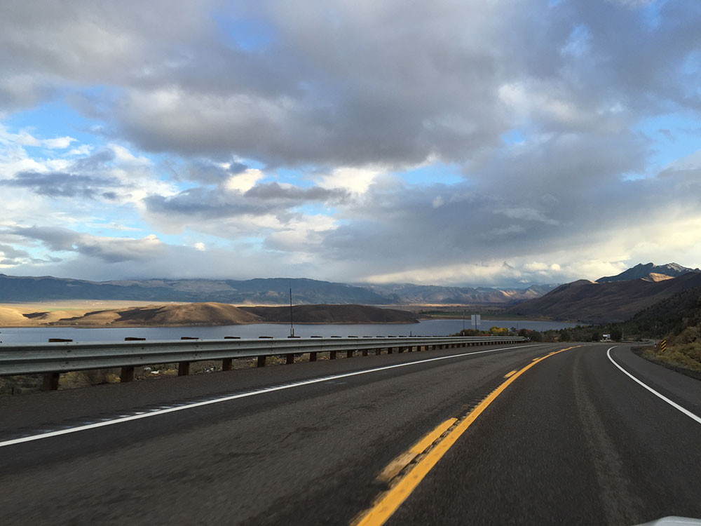

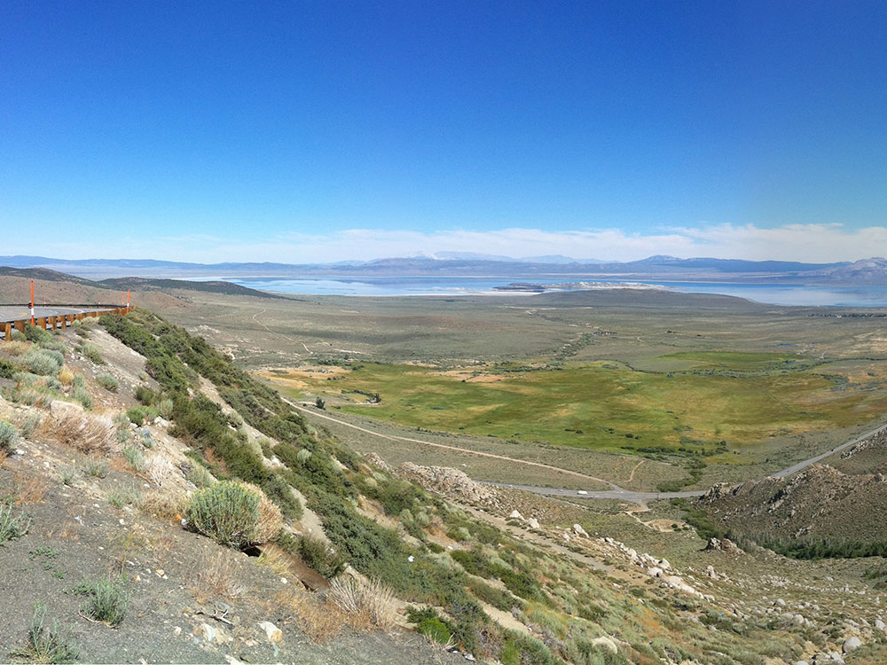
.jpg){kind=link}
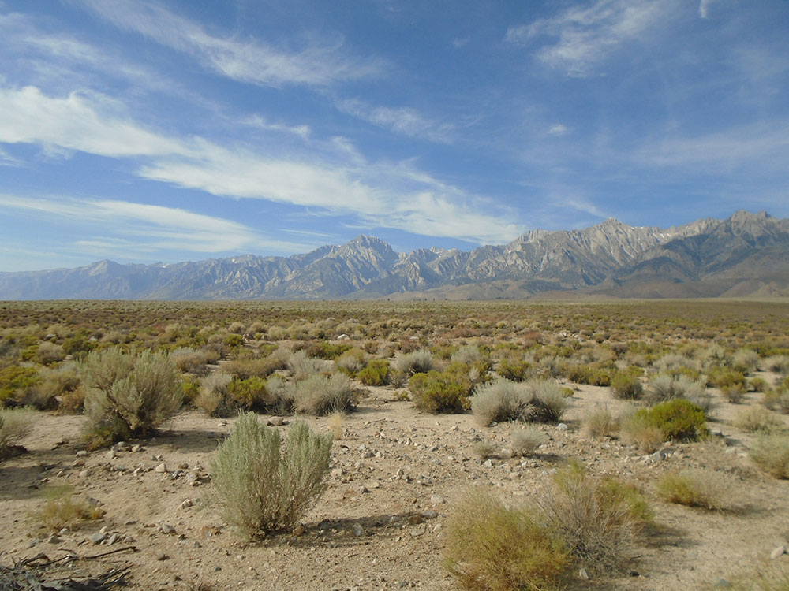
_from_U.S._Route_395.jpg){kind=link}
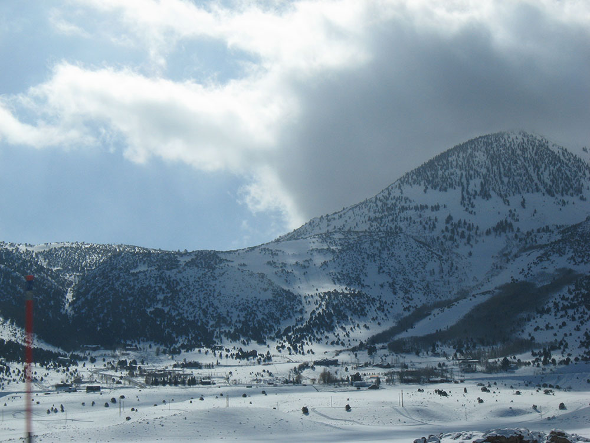
_07.JPG){kind=link}
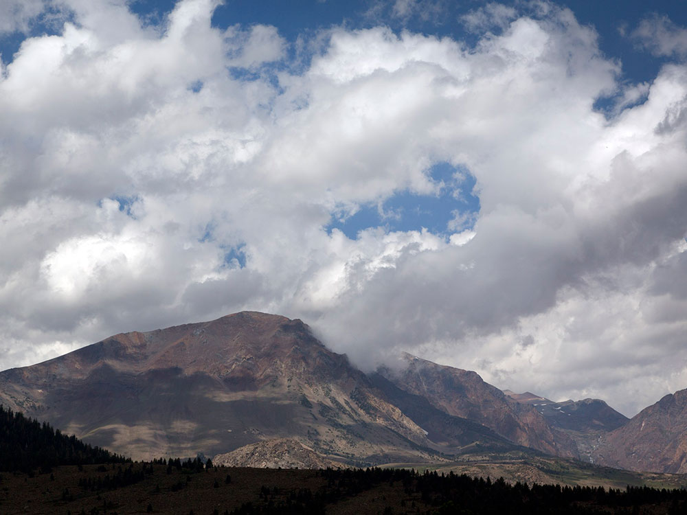
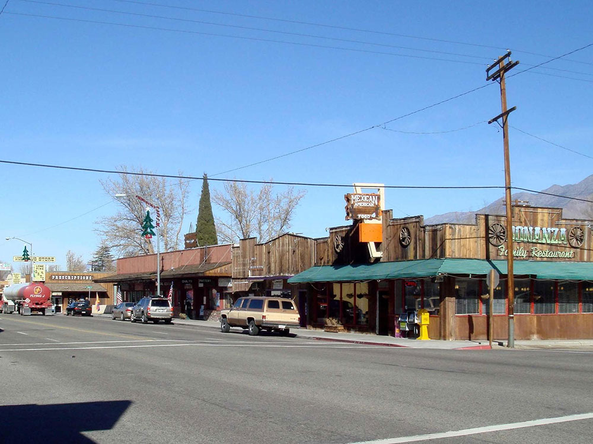

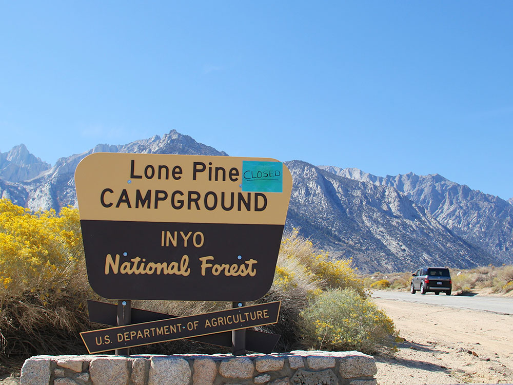

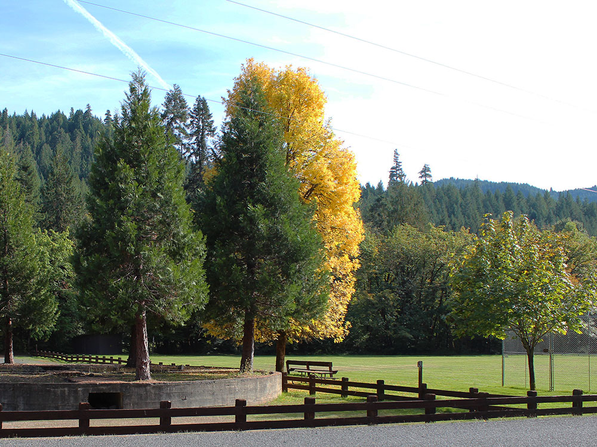
.jpg){kind=link}
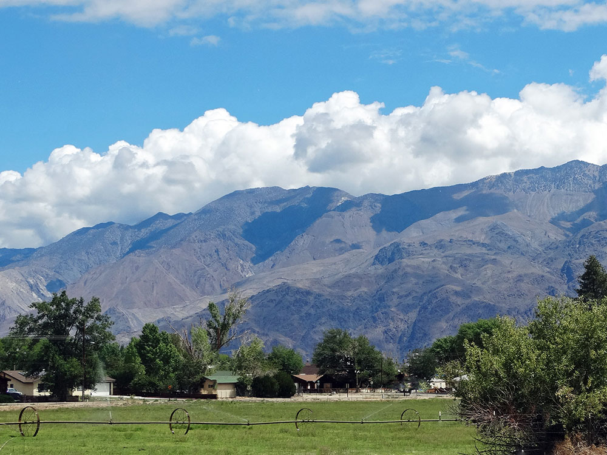
.jpg){kind=link}
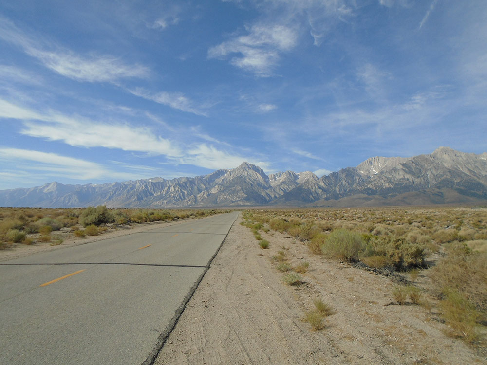

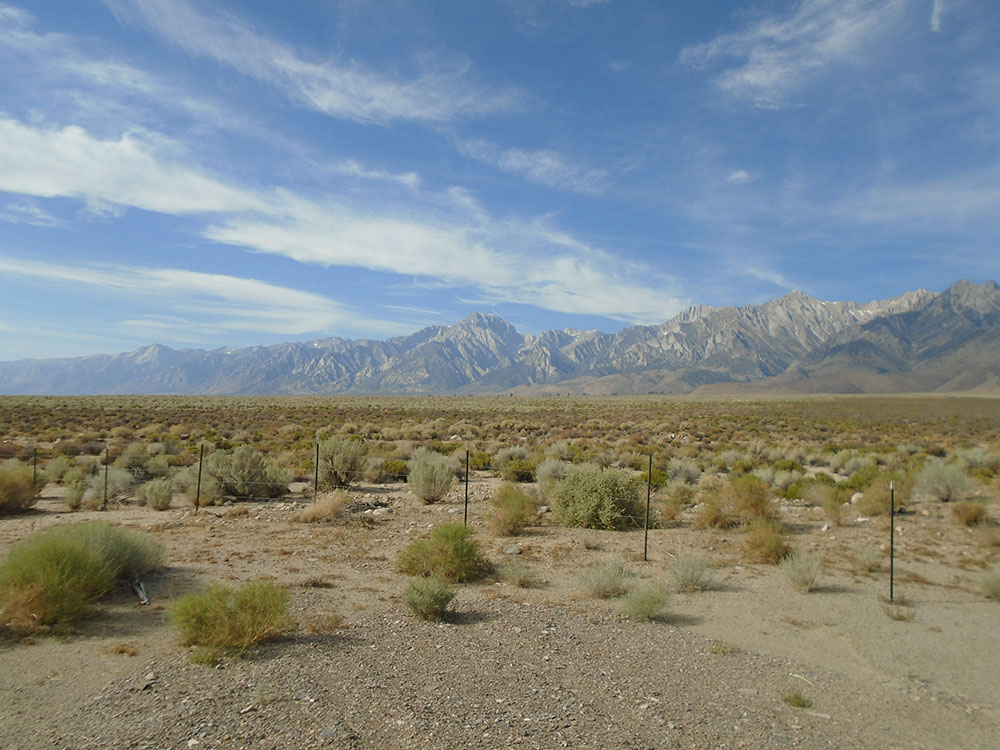

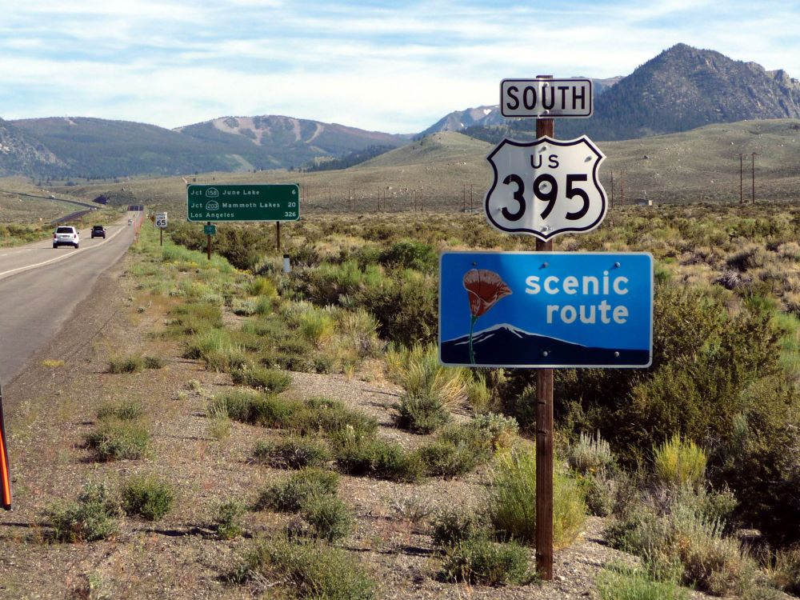
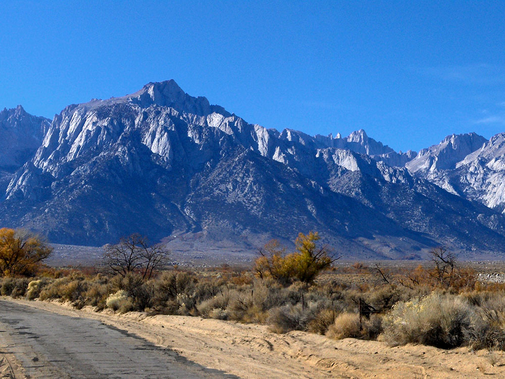
.jpg){kind=link}